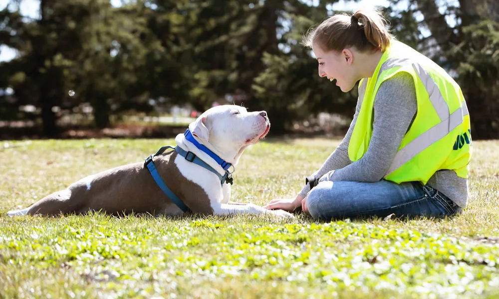

About Stray Dogs Welfare
We are a compassionate initiative dedicated to rescuing, treating, and protecting stray dogs. Every dog deserves love, care, and a chance to live with dignity.

🐾 Our Mission
To rescue injured and abandoned stray dogs, provide medical care, and ensure a better quality of life through rehabilitation and adoption.
💙 Our Vision
A society where stray dogs are treated with compassion, protected by humane practices, and welcomed as valued members of the community.
🤝 Our Values
Compassion, responsibility, transparency, and community involvement guide everything we do.